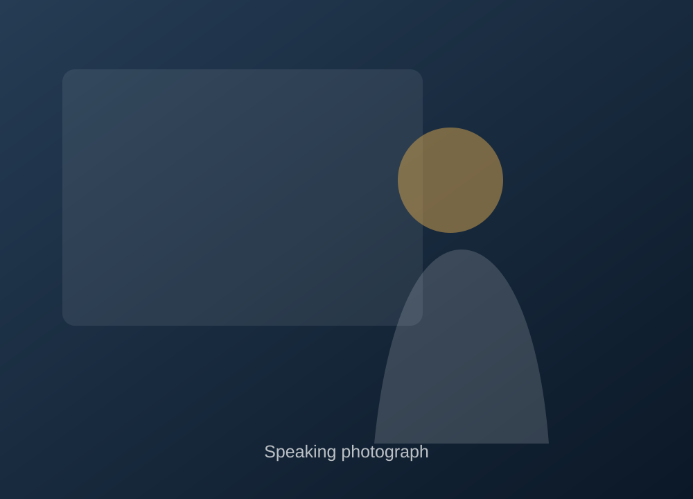

AI adoption starts with people
Technology can expand capacity, but adoption becomes durable when people have the knowledge, permission and agency to shape how a tool fits their work.
Speaking
I speak about leadership, human-centered AI adoption, empowerment and organizational change—with the goal of leaving people more hopeful, more practical, and more capable of acting than when we started.
Formats include keynotes, conference sessions, panels, executive conversations, workshops, leadership retreats and facilitated strategy sessions.

Featured keynote
Artificial intelligence is changing the way we work. The organizations that thrive will not simply adopt new technology—they will empower the people who know the work best. This keynote offers a research-informed approach to navigating change through trust, learning, thoughtful experimentation and agency.
Featured at California Workforce Association's Meeting of the Minds, Monterey · September 2026.
Speaking themes
These are not generic topic labels. Each is an argument about how people and organizations can navigate change more effectively.
Technology can expand capacity, but adoption becomes durable when people have the knowledge, permission and agency to shape how a tool fits their work.
AI can raise assisted performance while weakening independent judgment if organizations optimize for output alone. The design question is how to augment expertise rather than quietly substitute for it.
Optimism without a method is morale. Disciplined optimism pairs belief in possibility with an honest diagnosis of what is actually getting in the way.
Most leaders inherit processes, norms and structures. The work is learning which ones still serve the mission and how to change the ones that do not without destroying trust.
Watch
Selected presentation from the University of the Pacific Changemakers series.
What audiences can expect
The goal is not to fill a room with more information. It is to help people see their own work differently and leave with something useful enough to try.
Research and real implementation experience, translated without unnecessary jargon.
Stories, lived experience and audience participation that connect abstract change to the people living through it.
A concrete frame, question or practice people can bring back into their organization.
Include the organization, audience, event date, format and what you want people to leave thinking or doing differently.